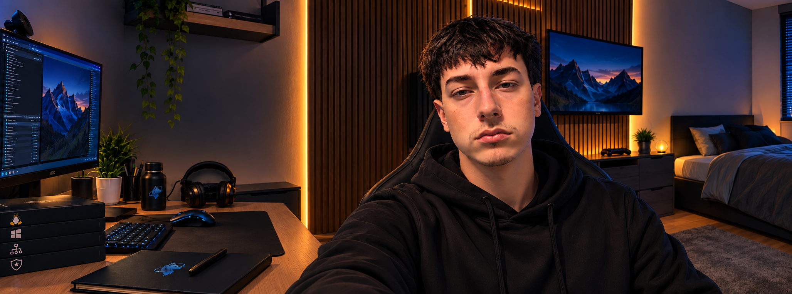

Sistemas
Windows · Linux
Samba · Microsoft 365

SISTEMAS QUE IMPULSAN IDEAS
Apasionado por la infraestructura IT, la tecnología y la mejora continua. Diseño, administro y documento sistemas que funcionan, aportando valor y resolviendo problemas reales.
“La tecnología es más interesante
cuando resuelve problemas reales.”
Windows · Linux
Samba · Microsoft 365
VLAN · DNS · DHCP
pfSense · VPN
Proxmox · VirtualBox
VMware
Sophos · GPO · Hardening
Monitorización
Scripts · n8n · Git
Backup
PROYECTOS DESTACADOS
Infraestructura IT completa para un supermercado: redes, servidores, ERP, seguridad y monitorización.
Ver proyecto →Infraestructura personal basada en ThinkCentre para aprender, automatizar y documentar.
En desarrollo...Guías, laboratorios, procedimientos y documentación técnica desarrollada a partir de proyectos reales y entornos de laboratorio.
Redes, servidores, virtualización, servicios y administración de sistemas.
Administración de Sistemas Informáticos en Red. Documentación, prácticas y proyectos realizados durante el ciclo formativo.
Pruebas, configuraciones y escenarios realizados en entornos de laboratorio.
Soy Samuel Prado Pereira, Técnico de Sistemas Informáticos en Red, orientado a la administración de sistemas, redes e infraestructura IT.
Mi forma de trabajar se basa en entender cómo funciona cada componente, documentarlo y buscar soluciones que sean mantenibles y útiles en entornos reales.
Este espacio reúne mis proyectos, documentación, laboratorios y evolución técnica.
Windows · Linux · Microsoft 365 · Samba
Redes · Servidores · Virtualización
Firewalls · GPO · Hardening · Monitorización
Scripts · Git · n8n · Backup
PERFIL PROFESIONAL
Consulta mi CV para conocer mi formación, experiencia, conocimientos técnicos y trayectoria.
Si quieres conocer alguno de mis proyectos, hablar sobre infraestructura IT o contactar conmigo profesionalmente, puedes hacerlo a través de cualquiera de estos canales.